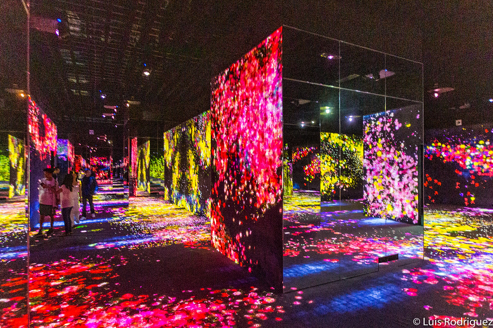

História da Galeria de Arte Metropolitana
A Galeria Metropolitana de Arte de Tóquio, localizada no coração do Parque Ueno, é um dos principais centros culturais da cidade. Fundada em 1926, a galeria é conhecida por suas exposições temporárias que abrangem uma vasta gama de estilos e períodos artísticos, desde a arte tradicional japonesa até a arte contemporânea internacional. O edifício moderno e espaçoso oferece um ambiente ideal para apreciar obras de arte, proporcionando uma experiência enriquecedora para todos os visitantes.
Exterior da Galeria

Perpectiva histórica, e cultural da Galeria
Além das exposições, a Galeria Metropolitana de Arte de Tóquio também promove eventos culturais, workshops e palestras, tornando-se um ponto de encontro para artistas e entusiastas da arte. Com sua localização privilegiada e programação diversificada, a galeria desempenha um papel crucial na promoção da arte e cultura em Tóquio, atraindo tanto moradores locais quanto turistas de todo o mundo. Visitar a galeria é uma oportunidade única para mergulhar na rica tapeçaria cultural da cidade.
Interior da Galeria
